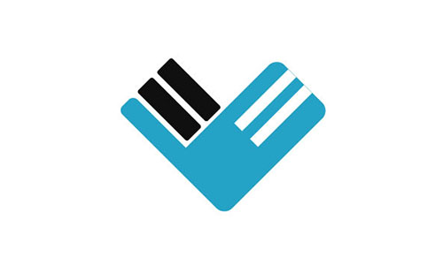
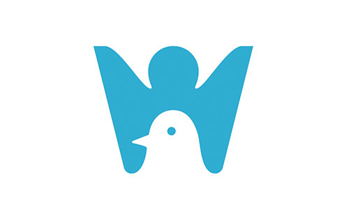

Logo设计图展示

关键词：字母WM、互联网
设计思路：运用“为民”的首字母，W和M，从左上往右看，呈现W字母，从左下往右看，呈现M字母。方块的寓意是平台，象征平台一步一脚印为人民服务。

关键词：爱心、便捷、方便
设计思路：整体设计是用心形轮廓，并将“为民”首字母以影印的方式呈现在轮廓上，整体呈现一个翅膀飞翔的图案，提现平台采购药物的方便与快捷。

关键词：企鹅、护士帽
设计思路：企鹅代表公司形象，logo以护士的身份形象展现，重点突出公司平台式为医药机构采购服务的展现形式。

关键词：企鹅、物流、医疗
设计思路：LOGO展示了一只展翅前冲的企鹅，有强烈的画面感，展现了企鹅蓬勃发展的美好光景。爱心剪影代表了企业时时不忘一颗为民之心。

关键词：企鹅、医疗
LOGO展示了一只怀抱爱心的企鹅。

关键词：人、互联网、企鹅
设计思路：图形由W和企鹅构成，W形似雀跃的人，W是为民企鹅的首字母，同时代表了互联网（WWW）,企鹅放置在人的下方，更能展现企业踏实发展，勤恳为民服务的文化理念